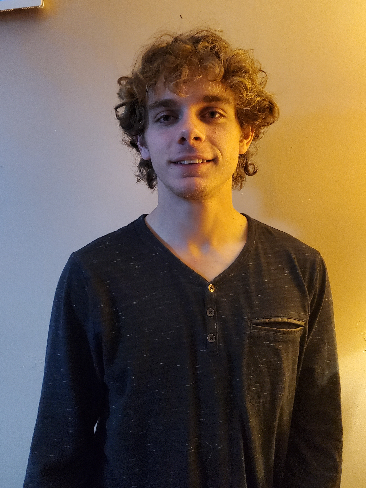
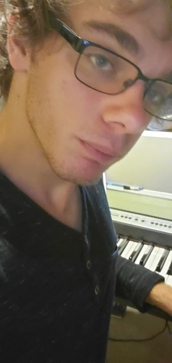
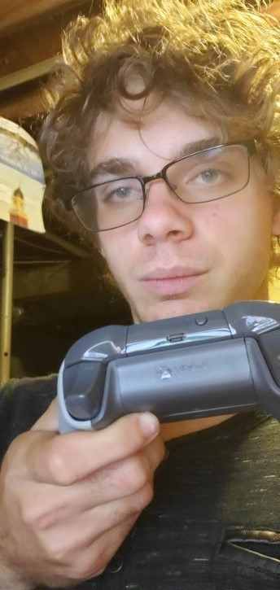

|
|
|
|
|---|
My name is Lee and I am
currently attending URI
as a computer science
major.
 I have many gaming platforms that I play
on that will give me many ideas of what
to create in the long run. Also, as well
as apps that I have tried on my phone.
What I hope to get out of this course is
some idea on how creating a game and an
interactive app will work so that I can
build my knowledge from there.

One of my hobbies is playing the piano.
I have been playing the piano since I was
7 years old. I started taking lessons since
I was 16.
I also did my high school senior project
on improving my skills for the piano
in that senior year time frame.

My favorite console to play on is the Xbox One. Though the console
I have so far is the Xbox One X. I have been playing Xbox consoles
ever since the first xbox had been released.
I have tried playing playstation consoles in
the past but I stuck with the xbox console
because the controllers are very nice and
fitting for my hands.